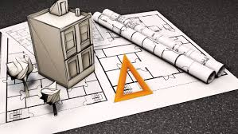

Universidad Americana UAM
Misión
Formar profesionales competentes, éticos y comprometidos con el desarrollo sostenible de Nicaragua, mediante una educación de calidad, innovación y responsabilidad social.
Nuestra misión incluye fomentar el pensamiento crítico, la creatividad y el liderazgo en nuestros estudiantes, preparándolos para enfrentar los desafíos globales con soluciones innovadoras y sostenibles.
Visión
Ser una universidad líder en educación superior en Nicaragua, reconocida por su excelencia académica, investigación y contribución al progreso de la sociedad.
Aspiramos a ser un referente regional en la formación de profesionales que impacten positivamente en sus comunidades, promoviendo la equidad, la inclusión y el desarrollo sostenible.
Descripción
La Universidad Americana (UAM) es una institución educativa de prestigio en Nicaragua, dedicada a ofrecer programas académicos de alta calidad, fomentando el desarrollo integral de sus estudiantes y promoviendo valores de ética, innovación y responsabilidad social.
Con una amplia oferta académica que incluye programas de grado, posgrado y educación continua, la UAM se posiciona como un pilar fundamental en la formación de líderes comprometidos con el bienestar de la sociedad.


Carreras
Ingeniería en Sistema
La carrera de Ingeniería en Sistemas forma profesionales capaces de diseñar, desarrollar, implementar y administrar soluciones tecnológicas que optimizan procesos en empresas e instituciones. A través de una formación integral, el estudiante adquiere conocimientos en programación, bases de datos, redes, seguridad informática, inteligencia artificial y gestión de proyectos tecnológicos. El Ingeniero en Sistemas es un profesional innovador, con una visión estratégica que combina habilidades técnicas y de análisis para resolver problemas y mejorar la eficiencia organizacional. La carrera promueve el aprendizaje continuo, la creatividad, el trabajo en equipo y la ética profesional, preparando a sus egresados para enfrentar los retos de un mundo cada vez más digitalizado.

Administración de Empresas
La carrera de Administración de Empresas forma líderes con visión estratégica, capaces de gestionar eficientemente recursos humanos, financieros y materiales para impulsar el crecimiento y la sostenibilidad de organizaciones en cualquier sector. A través de una sólida formación en gestión, finanzas, mercadeo, operaciones y emprendimiento, los estudiantes desarrollan habilidades analíticas, de liderazgo y toma de decisiones. El Administrador de Empresas es un profesional versátil, preparado para enfrentar los desafíos del mundo empresarial, adaptarse a entornos cambiantes y liderar equipos hacia el logro de objetivos organizacionales. La carrera fomenta el pensamiento crítico, la responsabilidad social y la innovación.

Medicina
La carrera de Medicina forma profesionales de la salud comprometidos con la vida, la ciencia y el bienestar social. A través de una formación rigurosa en ciencias básicas, clínicas y humanísticas, los estudiantes adquieren los conocimientos, habilidades y valores necesarios para prevenir, diagnosticar, tratar y rehabilitar enfermedades, siempre con un enfoque ético y humanista. El Médico es un profesional que combina el dominio científico con la empatía, el compromiso social y la responsabilidad. Está preparado para brindar atención integral a sus pacientes, liderar equipos de salud, realizar investigación médica y contribuir al desarrollo de políticas de salud pública.
Derecho
La carrera de Medicina forma profesionales de la salud comprometidos con la vida, la ciencia y el bienestar social. A través de una formación rigurosa en ciencias básicas, clínicas y humanísticas, los estudiantes adquieren los conocimientos, habilidades y valores necesarios para prevenir, diagnosticar, tratar y rehabilitar enfermedades, siempre con un enfoque ético y humanista. El Médico es un profesional que combina el dominio científico con la empatía, el compromiso social y la responsabilidad. Está preparado para brindar atención integral a sus pacientes, liderar equipos de salud, realizar investigación médica y contribuir al desarrollo de políticas de salud pública.

Arquitectura
La carrera de Arquitectura forma profesionales creativos, innovadores y comprometidos con el diseño de espacios que mejoren la calidad de vida de las personas. A través de una formación integral en diseño, urbanismo, construcción y sostenibilidad, los estudiantes desarrollan habilidades técnicas, artísticas y de gestión que les permiten materializar ideas en proyectos funcionales, estéticos y respetuosos con el entorno. El Arquitecto es un profesional con visión crítica y sensibilidad social, capaz de concebir, planificar y ejecutar proyectos arquitectónicos y urbanos que respondan a las necesidades contemporáneas y futuras de la sociedad.
Eventos Universitarios
La Universidad Americana (UAM) se distingue por ofrecer una experiencia educativa integral, complementada con una amplia variedad de eventos académicos, culturales y sociales que enriquecen la formación de sus estudiantes y fortalecen los lazos con la comunidad.
Conferencias y Charlas Académicas
UAM organiza regularmente conferencias y charlas impartidas por expertos nacionales e internacionales, abordando temas de actualidad en diversas disciplinas. Estas actividades fomentan el pensamiento crítico y la actualización constante del conocimiento.
Ferias y Exposiciones
Las ferias temáticas, como la Feria de Becas Europeas, ofrecen a los estudiantes oportunidades para explorar opciones de estudio en el extranjero y establecer contactos con representantes de instituciones internacionales.
Talleres y Seminarios
A través de talleres prácticos y seminarios especializados, los estudiantes desarrollan habilidades técnicas y profesionales en áreas como marketing digital, liderazgo, innovación y más.
Actividades Culturales y Recreativas
La vida estudiantil en UAM se enriquece con actividades culturales, deportivas y recreativas que promueven la integración, el bienestar y el desarrollo personal de los estudiantes.
Participación en Eventos Nacionales e Internacionales
UAM participa activamente en eventos como la Feria Tecnológica Internacional de Comtech, donde estudiantes y docentes presentan proyectos innovadores y se mantienen al tanto de las últimas tendencias tecnológicas. Estos eventos reflejan el compromiso de la UAM con la excelencia académica, la internacionalización y la formación de líderes capaces de enfrentar los desafíos del mundo actual.